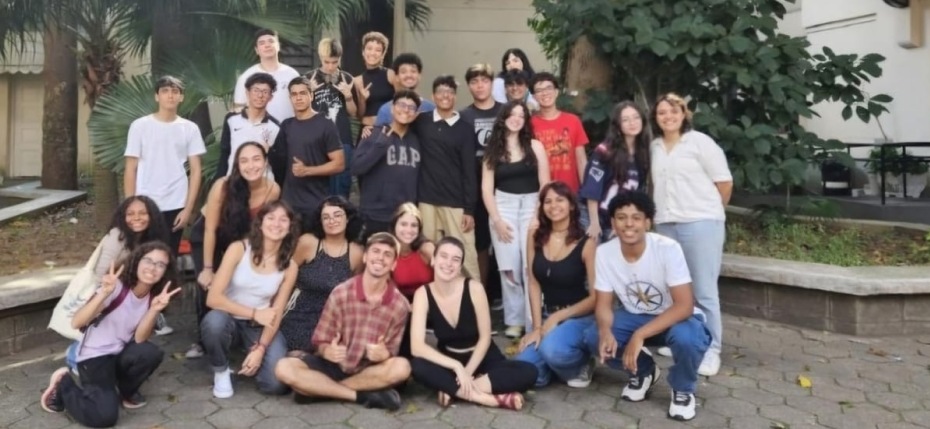

Quem somos nós?
O 9° ano é recheado de oportunidades para alunos de São Paulo que desejam cursar um ensino médio de qualidade gratuitamente. Muitas vagas são ofertadas por instituições públicas de excelência (como ETECs e Institutos Federais) e até mesmo por escolas particulares, através de bolsas de estudo integrais.
No entanto, não é tão fácil conseguir uma dessas vagas. Geralmente, há um processo seletivo para elas, no qual alunos de escolas públicas e particulares disputam entre si para consegui-las. Nesse processo, alunos de escola pública entram em desvantagem, por conta das falhas do nosso sistema educacional.A proposta do Projeto Progressão é auxiliar esses alunos em desvantagem a ocupar essas vagas.
Para isso, os alunos da ETEC de São Paulo oferece aulas dos conteúdos cobrados por esses processos seletivos, orientação e materiais de apoio, tudo DE GRAÇA.